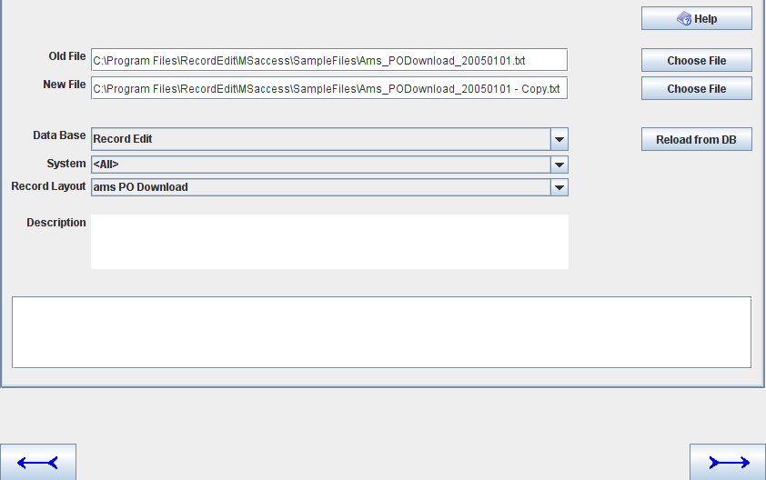
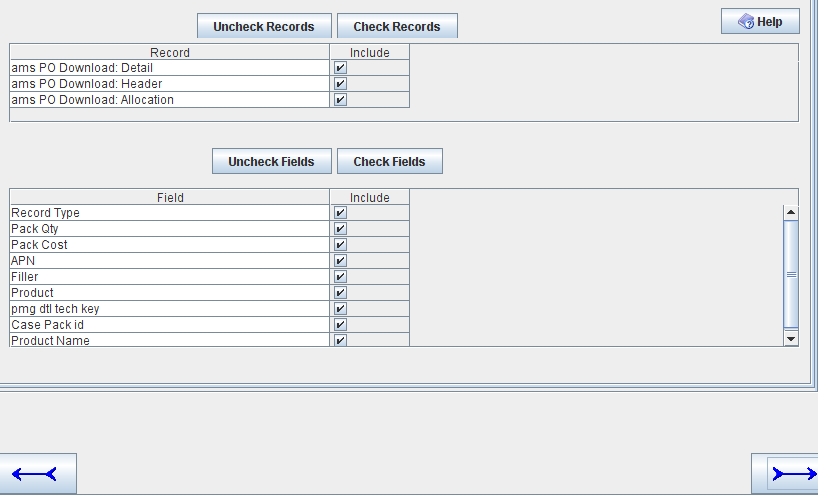
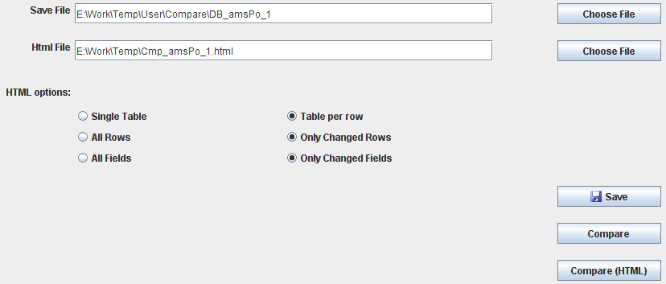
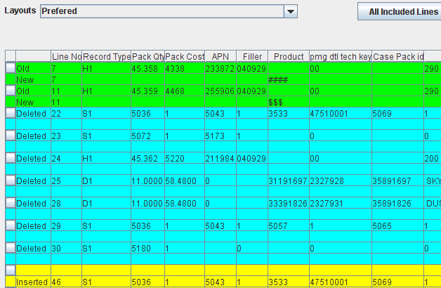
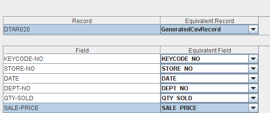

JRecord
JRecord
Diff Utility |
|||||||||||
|
Diff Utility |
|||||||||||
The diff will compare 2 files field by field. Where it differs from most other File Compare's is
Cases where you might use this particular File Compare include:
When you start the diff program, a menu is displayed with 3 options:

The first screen lets you enter the 2 files to be compared + the record layout to be used.

The next screen lets you select which Records / Fields are to be compared

The next screen lets you:

If you run the option online; the first screen lists all differences in a single table. You can switch between displaying all / changed lines using the button on the top right of the screen.
You can select a single line display by clicking on the button on the left hand side of the screen.
See Cmp_amsPo_1.html for a sample HTML compare

Note: Green means changed line, Blue is for deleted line and Yellow
is for inserted line.
If you select a single line display, you will get (click the left most column of the screen above):

When comparing files in different formats (i.e. 2 different layouts), select option 3 from the compare main menu. The files can be quite different formats. One could be native mainframe Binary file and the other a PC CSV file. It the data in the fields that is compared.
The first 2 screens look like the following and you enter the 2 files and there record layouts.

Following is the field selection where you match the fields up:

The next screen lets you:
| JRecord at SourceForge | Download Page | Forums |